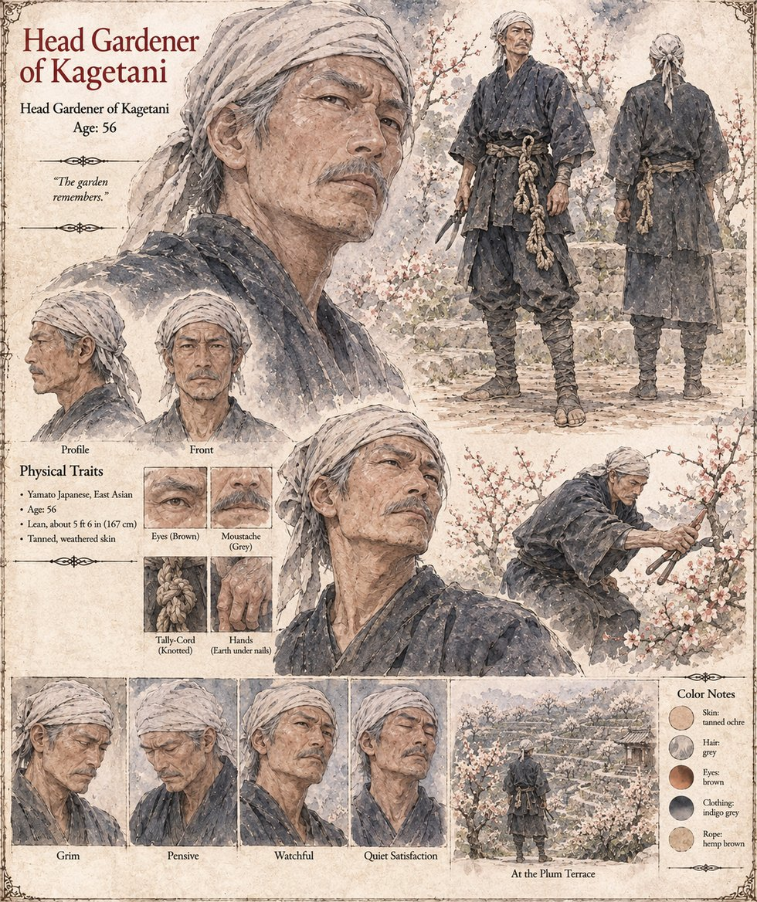

The Head Gardener of Kagetani
Head gardener of Kagetani · set the plum terrace’s spiral by eye · keeper of a knotted tally-cord · 56 by his sheet
The gardener who lays out the newest terrace of Moritane’s garden. The plum terrace winds outward from the water in a spiral whose rings hold one tree, then one, two, three, five, eight and thirteen, and he sets every one of them entirely by eye, arriving at the numbers in a single feverish week. He keeps a knotted tally-cord of the garden’s blossoms, for reasons he never gives. The plum trees bloom out of season under paper screens and charcoal braziers, and the terrace is the one that ends trampled in the ruin where Moritane dies; the garden it belongs to is the one the chronicles name the uprising after.
The manuscript gives the spiral and the tally-cord and no more; the age of 56 and every physical detail are the sheet’s. It draws him lean at about 5 ft 6 in, with a narrow lined face, tanned weathered skin, sharp brown eyes, grey hair under a wrapped head-cloth and a thin grey moustache, in an indigo-grey jacket and wrapped leggings, pruning shears in hand, a hemp tally-cord knotted at his waist and earth permanently under his nails. Its panels are Grim, Pensive, Watchful and Quiet Satisfaction; its scenes show him cutting a blossoming plum branch and standing small among the terraces beside the pavilion, captioned At the Plum Terrace. The line printed under his name, The garden remembers., is the sheet’s own; the manuscript does not give it to him.